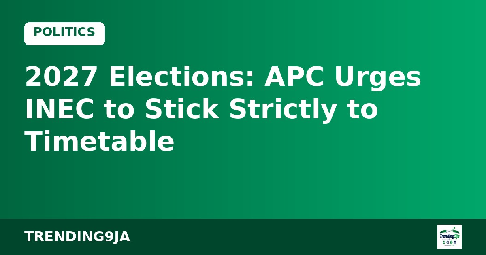

Head of Service Commends Outgoing UI Vice-Chancellor Adebowale
Civil Service chief Olumuyiwa Enitan has praised outgoing UI Vice-Chancellor Prof Kayode Adebowale as Prof Peter Olapegba prepares to assume office.

The All Progressives Congress has asked the Independent National Electoral Commission to maintain its published schedule for the upcoming 2027 general elections without altering deadlines to favour any political organisation, according to Vanguard.
APC National Chairman, Professor Nentawe Goshwe Yilwatda, made the call during a meeting in Abuja with a pre-election fact-finding delegation from the Economic Community of West African States. The regional delegation was led by Victor Bockarie Foh, a former Vice-President of Sierra Leone.
A statement released by Abimbola Tooki, media aide to the party chairman, quoted Yilwatda as emphasizing the need for equal media coverage, accessible campaign locations, and a fair electoral process for all competing parties. He noted that the APC had already published its campaign list, inaugurated its team, and registered its candidates on the INEC portal.
Highlighting the ruling party's reach, Yilwatda stated that the APC possesses over 13 million registered members linked to their National Identification Numbers, along with 31 state governors, 88 senators, and 208 House of Representatives members. He added that despite having more than 7,000 aspirants in its primary contests, the party experienced minimal court challenges.
Sources: Vanguard
← More Politics storiesCivil Service chief Olumuyiwa Enitan has praised outgoing UI Vice-Chancellor Prof Kayode Adebowale as Prof Peter Olapegba prepares to assume office.

APC campaign chief Abdulaziz Yari has expressed optimism that President Bola Tinubu will win re-election in 2027, citing faith in God.

Yahaya Seriki, a former Kwara APC governorship aspirant, has endorsed President Bola Tinubu for a second term in 2027 during a N4bn empowerment event in Ilorin.